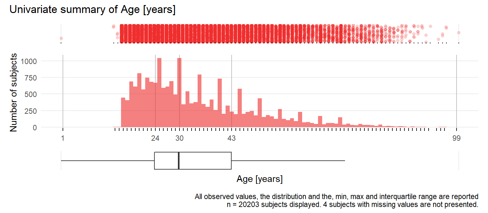
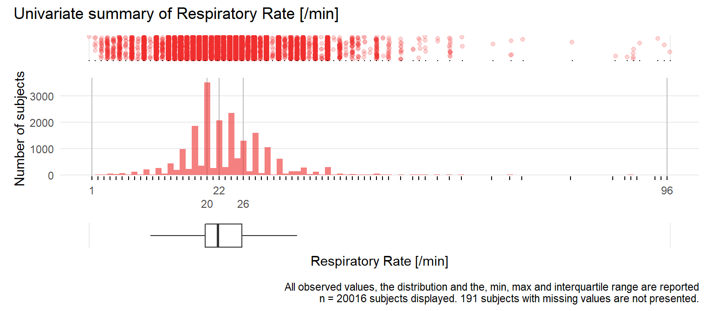
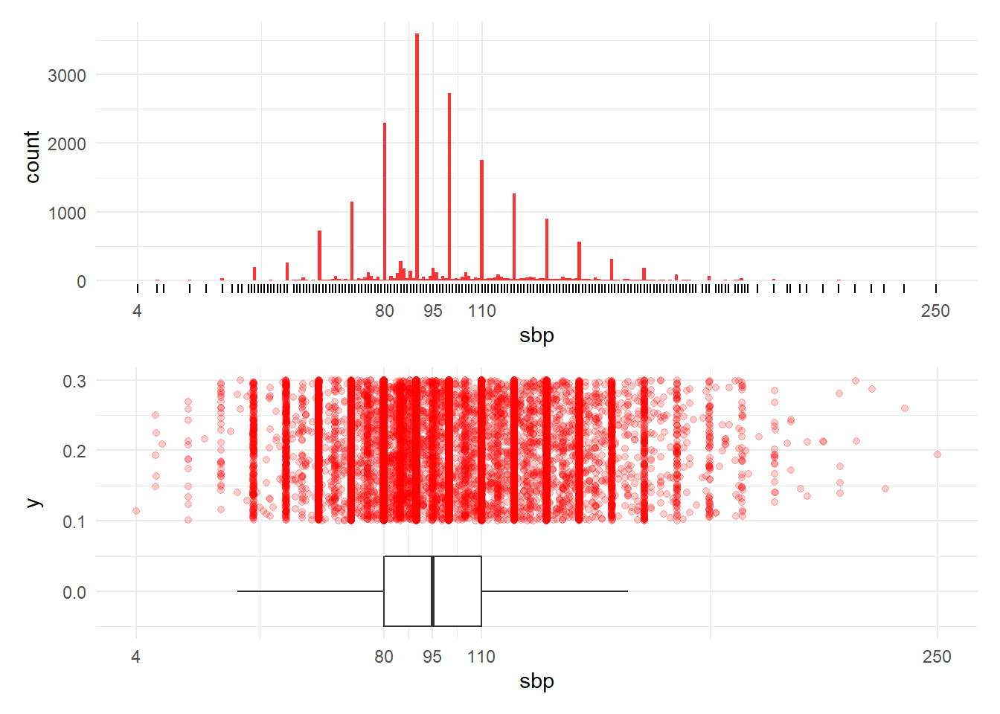

Chapter 5 Univariate summary CRASH-2 dataset
library(here)
library(tidyverse)
library(janitor)
library(summarytools)
library(Hmisc)
source(here("R", "tmp_hist_plot.R"))5.1 Read data
5.1.1 Load the dataset.
Complete metadata by adding missing labels.
## Input object size: 4094896 bytes; 44 variables 20207 observations
## New object size: 4095640 bytes; 44 variables 20207 observations5.1.2 Describe the dataset
Use Hmisc describe function.
Crash2 data set
44 Variables 20207 Observations
44 Variables 20207 Observations
entryid: Unique Numbers for Entry Forms

| n | missing | distinct | Info | Mean | Gmd | .05 | .10 | .25 | .50 | .75 | .90 | .95 |
|---|---|---|---|---|---|---|---|---|---|---|---|---|
| 20207 | 0 | 20207 | 1 | 10132 | 6760 | 1011 | 2022 | 5060 | 10130 | 15204 | 18242 | 19255 |
source: Method of Transmission of Entry Form to CC

| n | missing | distinct |
|---|---|---|
| 20207 | 0 | 5 |
| lowest : | telephone | telephone entered manually | electronic CRF by email | paper CRF enteredd in electronic CRF | electronic CRF |
| highest: | telephone | telephone entered manually | electronic CRF by email | paper CRF enteredd in electronic CRF | electronic CRF |
trandomised: Date of Randomization

n missing distinct Info Mean Gmd .05
20207 0 1664 1 2008-04-01 466.9 2006-03-10
.10 .25 .50 .75 .90 .95
2006-07-19 2007-06-10 2008-06-06 2009-02-26 2009-08-27 2009-10-28
| lowest : | 2005-05-19 | 2005-05-22 | 2005-05-25 | 2005-05-26 | 2005-05-27 |
| highest: | 2010-01-11 | 2010-01-12 | 2010-01-14 | 2010-01-22 | 2010-01-23 |
outcomeid: Unique Number From Outcome Database

| n | missing | distinct | Info | Mean | Gmd | .05 | .10 | .25 | .50 | .75 | .90 | .95 |
|---|---|---|---|---|---|---|---|---|---|---|---|---|
| 20127 | 80 | 20127 | 1 | 10112 | 6734 | 1010 | 2023 | 5062 | 10116 | 15164 | 18185 | 19193 |
sex
| n | missing | distinct |
|---|---|---|
| 20206 | 1 | 2 |
Value male female Frequency 16935 3271 Proportion 0.838 0.162
age: Age years

| n | missing | distinct | Info | Mean | Gmd | .05 | .10 | .25 | .50 | .75 | .90 | .95 |
|---|---|---|---|---|---|---|---|---|---|---|---|---|
| 20203 | 4 | 84 | 0.999 | 34.56 | 15.55 | 18 | 19 | 24 | 30 | 43 | 55 | 64 |
injurytime: Hours Since Injury

| n | missing | distinct | Info | Mean | Gmd | .05 | .10 | .25 | .50 | .75 | .90 | .95 |
|---|---|---|---|---|---|---|---|---|---|---|---|---|
| 20196 | 11 | 93 | 0.972 | 2.844 | 2.35 | 0.5 | 1.0 | 1.0 | 2.0 | 4.0 | 6.0 | 7.0 |
injurytype

| n | missing | distinct |
|---|---|---|
| 20207 | 0 | 3 |
Value blunt penetrating blunt and penetrating Frequency 11189 6552 2466 Proportion 0.554 0.324 0.122
sbp: Systolic Blood Pressure mmHg

| n | missing | distinct | Info | Mean | Gmd | .05 | .10 | .25 | .50 | .75 | .90 | .95 |
|---|---|---|---|---|---|---|---|---|---|---|---|---|
| 19887 | 320 | 173 | 0.989 | 98.45 | 27.86 | 60 | 70 | 80 | 95 | 110 | 130 | 143 |
rr: Respiratory Rate /min

| n | missing | distinct | Info | Mean | Gmd | .05 | .10 | .25 | .50 | .75 | .90 | .95 |
|---|---|---|---|---|---|---|---|---|---|---|---|---|
| 20016 | 191 | 68 | 0.99 | 23.06 | 7.052 | 14 | 16 | 20 | 22 | 26 | 30 | 35 |
cc: Central Capillary Refille Time s

| n | missing | distinct | Info | Mean | Gmd | .05 | .10 | .25 | .50 | .75 | .90 | .95 |
|---|---|---|---|---|---|---|---|---|---|---|---|---|
| 19596 | 611 | 20 | 0.945 | 3.267 | 1.67 | 1 | 2 | 2 | 3 | 4 | 5 | 6 |
Value 1 2 3 4 5 6 7 8 9 10 11 12
Frequency 1510 5328 6020 3367 1805 802 268 271 45 139 3 7
Proportion 0.077 0.272 0.307 0.172 0.092 0.041 0.014 0.014 0.002 0.007 0.000 0.000
Value 13 15 16 17 18 20 30 60
Frequency 3 19 3 1 1 2 1 1
Proportion 0.000 0.001 0.000 0.000 0.000 0.000 0.000 0.000
hr: Heart Rate /min

| n | missing | distinct | Info | Mean | Gmd | .05 | .10 | .25 | .50 | .75 | .90 | .95 |
|---|---|---|---|---|---|---|---|---|---|---|---|---|
| 20070 | 137 | 173 | 0.996 | 104.5 | 23.38 | 70 | 80 | 90 | 105 | 120 | 130 | 140 |
gcseye: Glasgow Coma Score Eye Opening

| n | missing | distinct | Info | Mean | Gmd |
|---|---|---|---|---|---|
| 19475 | 732 | 5 | 0.822 | 2.948 | 1.414 |
Value 0 1 2 3 4 Frequency 1639 2653 1615 2740 10828 Proportion 0.084 0.136 0.083 0.141 0.556
gcsmotor: Glasgow Coma Score Motor Response

| n | missing | distinct | Info | Mean | Gmd |
|---|---|---|---|---|---|
| 19475 | 732 | 7 | 0.782 | 4.794 | 1.797 |
Value 0 1 2 3 4 5 6 Frequency 1639 789 607 658 1144 3009 11629 Proportion 0.084 0.041 0.031 0.034 0.059 0.155 0.597
gcsverbal: Glasgow Coma Score Verbal Response

| n | missing | distinct | Info | Mean | Gmd |
|---|---|---|---|---|---|
| 19472 | 735 | 6 | 0.857 | 3.611 | 1.833 |
Value 0 1 2 3 4 5 Frequency 1642 2568 1200 903 3161 9998 Proportion 0.084 0.132 0.062 0.046 0.162 0.513
gcs: Glasgow Coma Score Total

| n | missing | distinct | Info | Mean | Gmd | .05 | .10 | .25 | .50 | .75 | .90 | .95 |
|---|---|---|---|---|---|---|---|---|---|---|---|---|
| 20184 | 23 | 13 | 0.863 | 12.47 | 3.594 | 4 | 6 | 11 | 15 | 15 | 15 | 15 |
Value 3 4 5 6 7 8 9 10 11 12 13 14
Frequency 784 520 441 584 733 576 504 663 586 951 1356 2140
Proportion 0.039 0.026 0.022 0.029 0.036 0.029 0.025 0.033 0.029 0.047 0.067 0.106
Value 15
Frequency 10346
Proportion 0.513
ddeath: Date of Death

n missing distinct Info Mean Gmd .05
3086 17121 1320 1 2008-03-08 477.7 2006-02-11
.10 .25 .50 .75 .90 .95
2006-06-29 2007-05-01 2008-05-03 2009-02-18 2009-08-23 2009-10-21
| lowest : | 2005-05-28 | 2005-06-05 | 2005-06-12 | 2005-06-14 | 2005-06-22 |
| highest: | 2010-01-09 | 2010-01-15 | 2010-01-17 | 2010-01-20 | 2010-01-24 |
cause: Main Cause of Death

| n | missing | distinct |
|---|---|---|
| 3089 | 17118 | 7 |
| lowest : | bleeding | head injury | myocardial infarction | stroke | pulmonary embolism |
| highest: | myocardial infarction | stroke | pulmonary embolism | multi organ failure | other |
scauseother: Description of Other Cause of Death
| n | missing | distinct |
|---|---|---|
| 20207 | 0 | 227 |
| lowest : | Acute Hypoxia | ACUTE LUNG INJURY | Acute Pulmonary Oedema | Acute Renal Failure | |
| highest: | trauma raquimedular | Traumatic Shock | Type I Respiratory failure | Unsurvivable injuries | Visceral injury |
status: Status of Patient at Outcome if Alive

| n | missing | distinct |
|---|---|---|
| 17038 | 3169 | 3 |
Value discharged still in hospital
Frequency 13681 1969
Proportion 0.803 0.116
Value transferred to other hospital
Frequency 1388
Proportion 0.081
ddischarge: Date of discharge, transfer to other hospital or day 28 from randomization

n missing distinct Info Mean Gmd .05
17022 3185 1658 1 2008-04-18 464.7 2006-03-24
.10 .25 .50 .75 .90 .95
2006-08-04 2007-06-30 2008-06-25 2009-03-12 2009-09-08 2009-11-09
| lowest : | 2005-05-26 | 2005-06-03 | 2005-06-06 | 2005-06-08 | 2005-06-10 |
| highest: | 2010-02-02 | 2010-02-03 | 2010-02-04 | 2010-02-07 | 2010-02-10 |
condition: Condition of Patient at Outcome if Alive

| n | missing | distinct |
|---|---|---|
| 16956 | 3251 | 5 |
| lowest : | no symptoms | minor symptoms | some restriction in lifestyle but independent | dependent, but not requiring constant attention | fully dependent, requiring attention day and night |
| highest: | no symptoms | minor symptoms | some restriction in lifestyle but independent | dependent, but not requiring constant attention | fully dependent, requiring attention day and night |
ndaysicu: Number of Days Spent in ICU

| n | missing | distinct | Info | Mean | Gmd | .05 | .10 | .25 | .50 | .75 | .90 | .95 |
|---|---|---|---|---|---|---|---|---|---|---|---|---|
| 20025 | 182 | 49 | 0.822 | 2.662 | 4.249 | 0 | 0 | 0 | 0 | 3 | 8 | 14 |
bheadinj: Significant Head Injury
| n | missing | distinct | Info | Sum | Mean | Gmd |
|---|---|---|---|---|---|---|
| 20127 | 80 | 2 | 0.652 | 6422 | 0.3191 | 0.4346 |
bneuro: Neurosurgery Done
| n | missing | distinct | Info | Sum | Mean | Gmd |
|---|---|---|---|---|---|---|
| 20127 | 80 | 2 | 0.28 | 2099 | 0.1043 | 0.1868 |
bchest: Chest Surgery Done
| n | missing | distinct | Info | Sum | Mean | Gmd |
|---|---|---|---|---|---|---|
| 20127 | 80 | 2 | 0.385 | 3043 | 0.1512 | 0.2567 |
babdomen: Abdominal Surgery Done
| n | missing | distinct | Info | Sum | Mean | Gmd |
|---|---|---|---|---|---|---|
| 20127 | 80 | 2 | 0.563 | 5042 | 0.2505 | 0.3755 |
bpelvis: Pelvis Surgery Done
| n | missing | distinct | Info | Sum | Mean | Gmd |
|---|---|---|---|---|---|---|
| 20127 | 80 | 2 | 0.185 | 1331 | 0.06613 | 0.1235 |
bpe: Pulmonary Embolism
| n | missing | distinct | Info | Sum | Mean | Gmd |
|---|---|---|---|---|---|---|
| 20127 | 80 | 2 | 0.021 | 139 | 0.006906 | 0.01372 |
bdvt: Deep Vein Thrombosis
| n | missing | distinct | Info | Sum | Mean | Gmd |
|---|---|---|---|---|---|---|
| 20127 | 80 | 2 | 0.012 | 81 | 0.004024 | 0.008017 |
bstroke: Stroke
| n | missing | distinct | Info | Sum | Mean | Gmd |
|---|---|---|---|---|---|---|
| 20127 | 80 | 2 | 0.018 | 121 | 0.006012 | 0.01195 |
bbleed: Surgery for Bleeding
| n | missing | distinct | Info | Sum | Mean | Gmd |
|---|---|---|---|---|---|---|
| 20127 | 80 | 2 | 0.214 | 1553 | 0.07716 | 0.1424 |
bmi: Myocardial Infarction
| n | missing | distinct | Info | Sum | Mean | Gmd |
|---|---|---|---|---|---|---|
| 20127 | 80 | 2 | 0.013 | 87 | 0.004323 | 0.008608 |
bgi: Gastrointestinal Bleeding
| n | missing | distinct | Info | Sum | Mean | Gmd |
|---|---|---|---|---|---|---|
| 20127 | 80 | 2 | 0.039 | 264 | 0.01312 | 0.02589 |
bloading: Complete Loading Dose of Trial Drug Given
| n | missing | distinct | Info | Sum | Mean | Gmd |
|---|---|---|---|---|---|---|
| 20127 | 80 | 2 | 0.027 | 19944 | 0.9909 | 0.01802 |
bmaint: Complete Maintenance Dose of Trial Drug Given
| n | missing | distinct | Info | Sum | Mean | Gmd |
|---|---|---|---|---|---|---|
| 20127 | 80 | 2 | 0.163 | 18965 | 0.9423 | 0.1088 |
btransf: Blood Products Transfusion
| n | missing | distinct | Info | Sum | Mean | Gmd |
|---|---|---|---|---|---|---|
| 20127 | 80 | 2 | 0.75 | 10232 | 0.5084 | 0.4999 |
ncell: Number of Units of Red Call Products Transfused

| n | missing | distinct | Info | Mean | Gmd | .05 | .10 | .25 | .50 | .75 | .90 | .95 |
|---|---|---|---|---|---|---|---|---|---|---|---|---|
| 10244 | 9963 | 47 | 0.966 | 3.919 | 3.445 | 1 | 1 | 2 | 3 | 5 | 8 | 11 |
nplasma: Number of Units of Fresh Frozen Plasma Transfused

| n | missing | distinct | Info | Mean | Gmd | .05 | .10 | .25 | .50 | .75 | .90 | .95 |
|---|---|---|---|---|---|---|---|---|---|---|---|---|
| 10243 | 9964 | 45 | 0.59 | 1.44 | 2.46 | 0 | 0 | 0 | 0 | 1 | 5 | 8 |
nplatelets: Number of Units of Platelets Transfused

| n | missing | distinct | Info | Mean | Gmd | .05 | .10 | .25 | .50 | .75 | .90 | .95 |
|---|---|---|---|---|---|---|---|---|---|---|---|---|
| 10243 | 9964 | 42 | 0.218 | 0.5526 | 1.057 | 0 | 0 | 0 | 0 | 0 | 0 | 4 |
ncryo: Number of Units of Cryoprecipitate Transfused

| n | missing | distinct | Info | Mean | Gmd | .05 | .10 | .25 | .50 | .75 | .90 | .95 |
|---|---|---|---|---|---|---|---|---|---|---|---|---|
| 10243 | 9964 | 28 | 0.11 | 0.2577 | 0.5038 | 0 | 0 | 0 | 0 | 0 | 0 | 0 |
bvii: Recombinant Factor VIIa Given
| n | missing | distinct | Info | Sum | Mean | Gmd |
|---|---|---|---|---|---|---|
| 19833 | 374 | 2 | 0.007 | 46 | 0.002319 | 0.004628 |
boxid: Treatment Box Number

| n | missing | distinct | Info | Mean | Gmd | .05 | .10 | .25 | .50 | .75 | .90 | .95 |
|---|---|---|---|---|---|---|---|---|---|---|---|---|
| 20207 | 0 | 2728 | 1 | 5131 | 2767 | 2140 | 2276 | 2734 | 4464 | 8226 | 8674 | 8829 |
packnum: Treatment Pack Number

| n | missing | distinct | Info | Mean | Gmd | .05 | .10 | .25 | .50 | .75 | .90 | .95 |
|---|---|---|---|---|---|---|---|---|---|---|---|---|
| 20207 | 0 | 48 | 0.998 | 51.35 | 27.62 | 22 | 23 | 27 | 45 | 82 | 86 | 88 |
5.2 Univariate summary
5.2.1 Continous variables
5.2.1.1 Age
Plot age.

Figure 5.1: Distribution of subject age [years]
title <- paste0("Univariate summary of ", with(crash2, label(age)), " [", with(crash2, units(age)), "]")
y_axis <- "Number of subjects"
x_axis <- paste0(with(crash2, label(age)), " [", with(crash2, units(age)), "]")
nmiss <- crash2 %>% filter(is.na(age)) %>% tally()
bign <- crash2 %>% filter(!is.na(age)) %>% tally()
caption <- paste0("All observed values, the distribution and the, min, max and interquartile range are reported\n",
bign, " subjects are displayed, with ",
nmiss, " subjects with missing values are not presented.")
# for calculating five number summary
x <- with(crash2, as.numeric(age))
p2 <-
crash2 %>%
filter(!is.na(age)) %>%
ggplot2::ggplot(aes(age)) +
geom_histogram(binwidth = 1,
center = 0,
alpha = 0.6, fill = "firebrick2") +
geom_rug() +
scale_x_continuous(limit = c(min(x), max(x)),
breaks = round(fivenum(x), 1)) +
ylab(y_axis) +
ggplot2::theme_minimal() +
theme(
#axis.title.y = element_text(angle = 0),
# panel.grid.major.y = element_blank(),
panel.grid.major.x = element_line(colour = "grey", size = 0.5),
panel.grid.minor = element_blank(),
axis.title.x = element_blank()
# axis.text.x = element_blank()
)
p1 <-
crash2 %>%
filter(!is.na(age)) %>%
ggplot(aes(x = age, y = 0)) +
geom_jitter(width = 0.1,
height = 0.1,
alpha = 0.2, color = "firebrick2") +
geom_rug(sides = "b") +
scale_x_continuous(limit = c(min(x), max(x)),
breaks = round(fivenum(x), 1)) +
ggplot2::theme_minimal() +
ylab(y_axis) +
theme(
panel.grid.major.y = element_blank(),
panel.grid.minor = element_blank(),
axis.title = element_blank(),
axis.text = element_blank()
)
p3 <-
crash2 %>%
filter(!is.na(age)) %>%
ggplot(aes(x = age, y = 0)) +
geom_boxplot(outlier.shape = NA, width = 0.1) +
scale_x_continuous(limit = c(min(x), max(x)),
breaks = c(round(fivenum(x), 1))) +
xlab(x_axis) +
ggplot2::theme_minimal() +
theme(
panel.grid.major.y = element_blank(),
panel.grid.minor = element_blank(),
axis.title.y = element_blank(),
axis.text = element_blank()
)
layout <- c(patchwork::area(1, 1, 1, 6),
patchwork::area(2, 1, 5, 6),
patchwork::area(6, 1, 6, 6))
gg <- p1 / p2 / p3 +
patchwork::plot_layout(design = layout) +
patchwork::plot_annotation(
title = title,
caption = caption
)
gg

Figure 5.2: Distribution of subject age [years]
5.2.1.2 Blood pressure
Plot blood pressure.

Figure 5.3: Distribution of SBP
5.2.1.3 RR
Figure 5.4: Distribution of respiratory rate
5.3 Session info
## R version 3.6.1 (2019-07-05)
## Platform: x86_64-w64-mingw32/x64 (64-bit)
## Running under: Windows 10 x64 (build 17763)
##
## Matrix products: default
##
## locale:
## [1] LC_COLLATE=English_United States.1252
## [2] LC_CTYPE=English_United States.1252
## [3] LC_MONETARY=English_United States.1252
## [4] LC_NUMERIC=C
## [5] LC_TIME=English_United States.1252
##
## attached base packages:
## [1] stats graphics grDevices utils datasets methods base
##
## other attached packages:
## [1] summarytools_0.9.6 janitor_2.0.1 Hmisc_4.4-0 Formula_1.2-3
## [5] survival_3.2-3 lattice_0.20-40 forcats_0.5.0 stringr_1.4.0
## [9] dplyr_0.8.5 purrr_0.3.4 readr_1.3.1 tidyr_1.0.2
## [13] tibble_3.0.1 ggplot2_3.3.0 tidyverse_1.3.0 here_0.1
##
## loaded via a namespace (and not attached):
## [1] nlme_3.1-145 matrixStats_0.56.0 fs_1.3.2
## [4] lubridate_1.7.4 RColorBrewer_1.1-2 httr_1.4.1
## [7] rprojroot_1.3-2 tools_3.6.1 backports_1.1.7
## [10] R6_2.4.1 rpart_4.1-15 DBI_1.1.0
## [13] colorspace_1.4-1 nnet_7.3-13 withr_2.2.0
## [16] tidyselect_1.1.0 gridExtra_2.3 compiler_3.6.1
## [19] cli_2.0.2 rvest_0.3.5 htmlTable_1.13.3
## [22] xml2_1.2.5 labeling_0.3 bookdown_0.18
## [25] scales_1.1.1 checkmate_2.0.0 digest_0.6.25
## [28] foreign_0.8-76 rmarkdown_2.1 base64enc_0.1-3
## [31] jpeg_0.1-8.1 pkgconfig_2.0.3 htmltools_0.4.0
## [34] highr_0.8 dbplyr_1.4.2 htmlwidgets_1.5.1
## [37] rlang_0.4.6 readxl_1.3.1 rstudioapi_0.11
## [40] pryr_0.1.4 farver_2.0.3 generics_0.0.2
## [43] jsonlite_1.6.1 acepack_1.4.1 magrittr_1.5
## [46] rapportools_1.0 patchwork_1.0.0 Matrix_1.2-18
## [49] Rcpp_1.0.4.6 munsell_0.5.0 fansi_0.4.1
## [52] lifecycle_0.2.0 stringi_1.4.6 yaml_2.2.1
## [55] snakecase_0.11.0 plyr_1.8.6 grid_3.6.1
## [58] crayon_1.3.4 haven_2.2.0 splines_3.6.1
## [61] pander_0.6.3 hms_0.5.3 magick_2.3
## [64] knitr_1.28 pillar_1.4.4 tcltk_3.6.1
## [67] codetools_0.2-16 reprex_0.3.0 glue_1.4.1
## [70] evaluate_0.14 latticeExtra_0.6-29 data.table_1.12.8
## [73] modelr_0.1.6 png_0.1-7 vctrs_0.3.0
## [76] cellranger_1.1.0 gtable_0.3.0 assertthat_0.2.1
## [79] xfun_0.12 broom_0.5.5 cluster_2.1.0
## [82] ellipsis_0.3.0